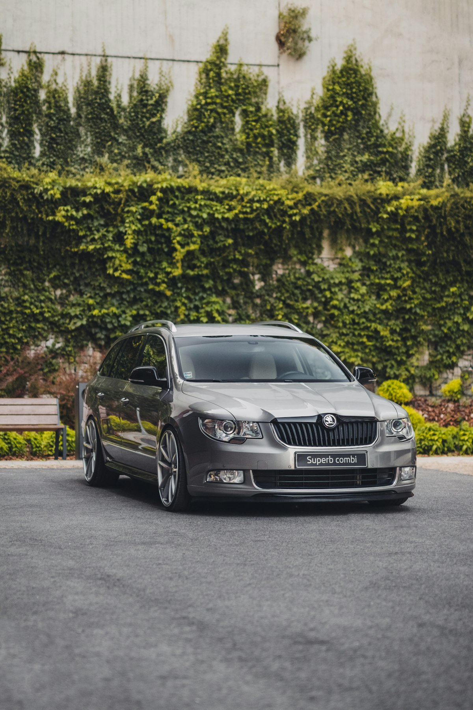

Ключі Škoda в Ужгороді — виготовлення, дублікат, програмування

Виготовляємо ключі Škoda для всіх моделей. Škoda використовує ту ж платформу що й Volkswagen (MQB / PQ35) — тому маємо повний набір лез HU66, HU162T та чіпів ID48, Megamos AES. Це означає, що дублікат ключа Octavia коштуватиме стільки ж, скільки для VW Passat — без націнки за «преміум».
Потрібен ключ Skoda?
Зателефонуйте — скажемо точну ціну та чи є потрібна заготовка
З якими моделями Skoda ми працюємо
- Škoda Octavia (A4, A5, A7, A8)
- Škoda Fabia
- Škoda Superb (B6, B8)
- Škoda Kodiaq
- Škoda Karoq
- Škoda Yeti
- Škoda Rapid
- Škoda Roomster
- Škoda Scala
Ціни на ключі Skoda в Ужгороді
| Послуга | Ціна | Час |
|---|---|---|
| Дублікат механічного ключа HU66 | від 1500 грн | 30 хв |
| Викидний ключ з чіпом ID48 | від 2200 грн | 45 хв |
| Smart-ключ MQB (Octavia A7/A8, Superb B8) | від 4500 грн | 1–2 год |
| Програмування при повній втраті | від 3500 грн | 1–3 год |
| Заміна корпусу викидного ключа | від 600 грн | 20 хв |
| Заміна батарейки + синхронізація | від 250 грн | 10 хв |
* Точна вартість залежить від моделі, року випуску та комплектації. Уточнюйте по телефону.
Чому Seven Keys для Skoda?
- Усі покоління Škoda від 1999 року до 2025
- Платформи PQ34, PQ35, MQB — повна підтримка
- Прив'язка через OBD-II
- Викидні корпуси Škoda — оригінал та аналоги в наявності
- Чіпи ID48, Megamos AES в наявності
- Програмуємо при повній втраті всіх ключів
Як замовити ключ Skoda
- Зателефонуйте і назвіть модель, рік випуску та VIN (бажано)
- Ми перевіримо наявність заготовки і назвемо точну ціну
- Приїжджайте до майстерні (вул. Фединця 39, Ужгород) або викликайте майстра з обладнанням
- Виготовляємо і програмуємо ключ при вас — у середньому за 1–2 години
- Перевіряємо роботу: запуск, центральний замок, кнопки
Часті запитання про ключі Skoda
Скільки коштує ключ для Škoda Octavia A7?
Дублікат викидного ключа з чіпом ID48 — від 2200 грн. Smart-ключ (для топової комплектації з безключовим доступом) — від 4500 грн.
Чи дорожчі ключі Škoda за ключі VW?
Ні. Škoda та VW — це той самий концерн і ті ж самі замки/чіпи. Ціна ідентична.
Чи можна зробити ключ для Škoda Superb B8 без оригіналу?
Так. Виготовлення smart-ключа MQB при повній втраті — від 6000 грн через складність протоколу.
Чи робите ключі для Škoda Kodiaq?
Так. Kodiaq використовує MQB-платформу. Дублікат smart-ключа — від 4500 грн.
Скільки часу займає програмування?
Дублікат до існуючого ключа — 30–60 хвилин. При повній втраті — 1–3 години залежно від покоління.
Не знайшли свою модель?
Працюємо з усіма Skoda — зателефонуйте, підкажемо рішення